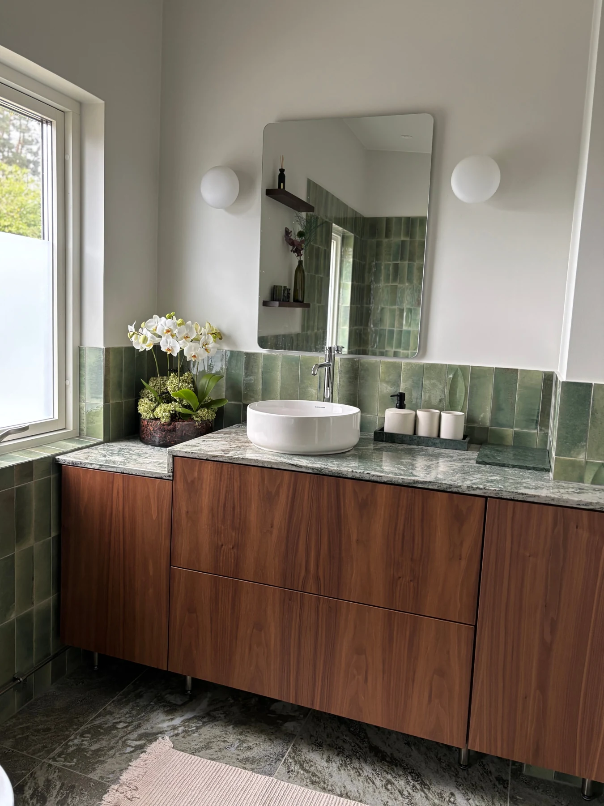

Samtalet
Vi börjar med dina behov, rummets förutsättningar och det du vill förändra.
Ett personligt hem börjar med hur du vill leva. Vi hjälper dig att se rummens möjligheter.

Du kan vara mitt i en renovering eller ha fastnat i ett enskilt rum. Med visuella underlag blir det lättare att välja och hålla ihop inredningen. Det som fungerar får gärna stanna.
Vi börjar med dina behov, rummets förutsättningar och det du vill förändra.
Du får ett upplägg och en offert. Koncept, kulörer och material tar form.
Förslaget utvecklas tillsammans med dig. Vi väljer vad som stannar och vad som tillkommer.
Ritningar och val blir ett tydligt underlag. Genomförandet anpassas efter uppdraget.
Berätta om dina idéer. Vi börjar med ett samtal om vad som skulle göra skillnad för dig.